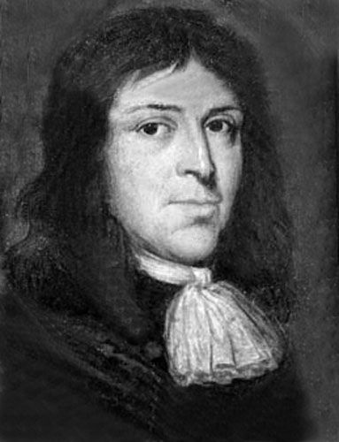

Samuel Parrish A merchant named Samuel Parris came to Salem from Barbados and became a pastor in the village. He brought with him, his family and two slaves. John Indian and Tituba.
His daughter betty and her two friends began having fits and behaving strangely. This came after they were likely told voodoo stories by Tituba and became interested in fortune telling themselves.
Now, with modern science, it could be explained with some illness like asthma, epilepsy or “convulsive ergotism”. Their behavior was similar to that of the kids from Boston who were said to have been bewitched.
The girls claimed to have been bewitched by tituba. After three days of pressure from the magistrates, tituba told them what they wanted to hear. She claimed to have encountered the devil and made a deal with him. She also claimed that the devil has come to her in many forms such as animals and shadowy figures. This along with the other accusations and even more fits more the children, led to mass hysteria in the village.

The Court of Oyer and Terminer Weeks of proceedings followed. The governor of Massachusetts Bay Colony, Sir Williams Phipps, put together a court with seven judges called the Court of Oyer and Terminer. During the trials, the people who were accused were not allowed to have any representation. While the accused were on the stands, the young girls who accused them would be having fits during the proceedings.
There was “mercy” given to the accused that confessed and named other witches. However, it is the accused that insisted on their innocence that met worse fates. The members of the community that were observing the events were scared to speak up against the court. Fearing they would face similar fates to those who were accused.
In 1711, the witch hunt was over and the Massachusetts legislature cleared the names of all those accused. In 1957, the legislature apologized for the Salem Witch Trials and to all the families that were affected. The official Salem Witch Trials Memorial and a marker for Bridget Bishop was established in 1992.